RE练习
最近群里各个方向的师傅都在布置练习，刚好遇到RE方向的，用课余时间解决了一下。
题目：link
RE1
RE1直接拖进IDA看F5
程序先生成了一个字符表：A-Z a-z 0-9
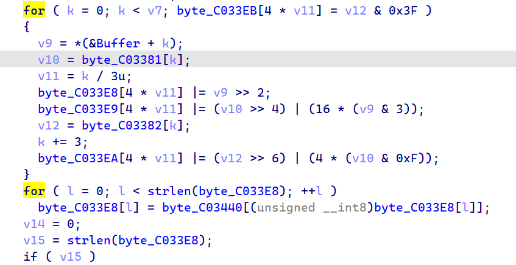
然后通过一个for循环对输入的数据进行处理，这里可以重写一下这个循环：
1 | for (k = 0; k < v7; k += 3) |
处理完后，根据字母表做一次变换：
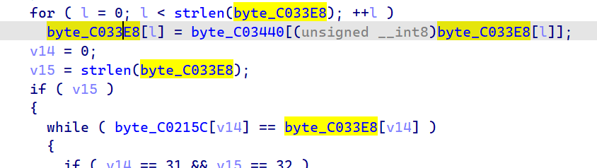
最后按位比对数据，其中byte_C0215C位常量：T3dheXNfQl9hd2FyZV9vZl9DYXMzXzY0
这题难度在于推到前面的变换，但是，ASCII字符不多，可以爆破:)
爆破脚本：
1 |
|
最后结果：
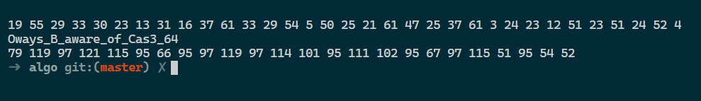
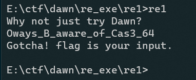
RE2
看文件logo怀疑是pyinstaller打包的程序，所以使用PyInstaller Extractor解包
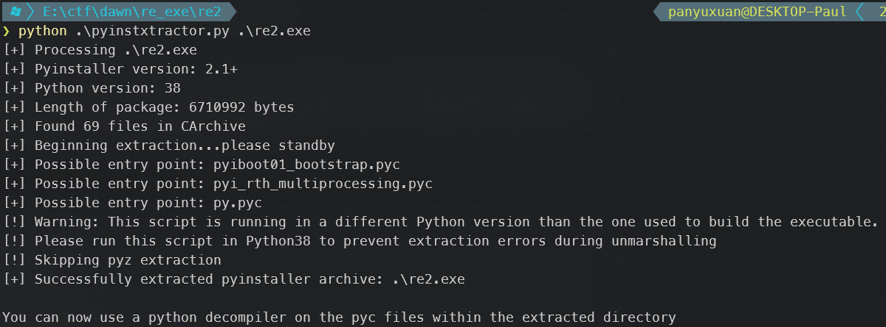
然后在目录下发现可疑文件py.pyc
尝试使用decompile3反编译，但是发现了报错
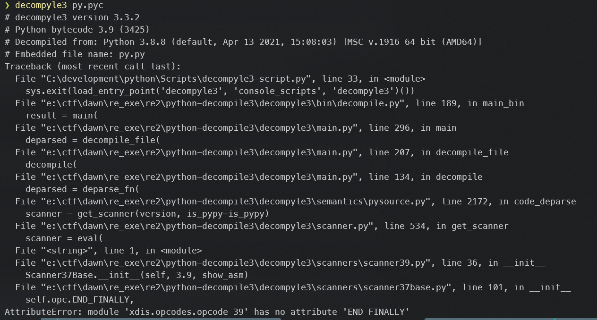
经百度，发现在pyinstaller打包时常见的混淆措施是修改pyc文件文件头
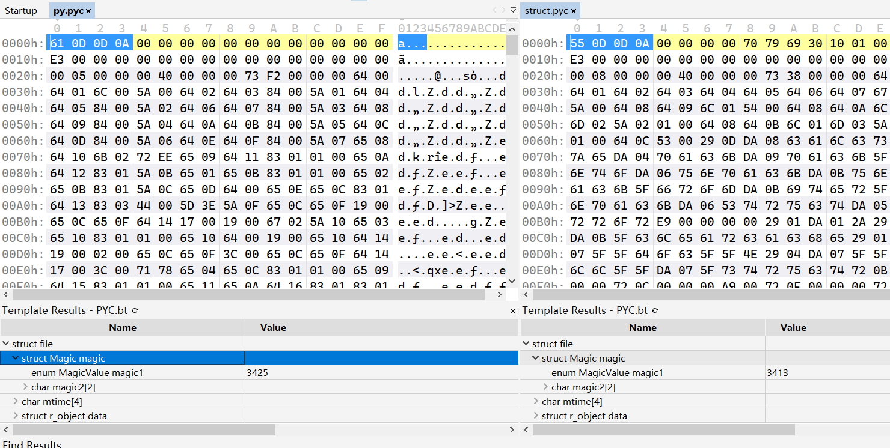
经过比对py.pyc和一个不太可能被混淆的库函数文件struct.pyc发现二者文件头魔数不一样，所以，直接修改py.pyc的文件头。成功反编译出py.pyc的源代码：
1 | # decompyle3 version 3.3.2 |
接着开始分析代码，输入的密码首先进行合法性验证(func0)，这里要求长度16位且内容在0123456789abcdef中
校验后将数据传入func1，func1的作用是将每4位作为一个十六进制数进行解析，将数据放入data数组中
然后按照每两个十六进制数为一组，传入func2进行处理，这个func2函数，根据提示怀疑是TEA算法，不过进行了魔改，那么，按照原来TEA解密的思路，依葫芦画瓢写一个解密函数：
1 | def defunc2(value): |
第一个for循环将传入的值使用魔改的TEA函数加密了，接着看else部分
func3就是一个简单比对，所以直接写解密脚本：
1 | # 不怎么会python, 代码写得丑... |
所以第一部分的密码是：1a2b3c4d5e6f7890
然后提示输入了flag并将结果切开成数组传入func5
而在func5中，先把前面的密码(1a2b3c4d5e6f7890)传入到了func4
先不管func4逻辑是什么，直接跑一遍得到了结果：
1 | [136, 87, 148, 51, 65, 6, 203, 55, 212, 27, 94, 61, 198, 93, 131, 104, 38, 18, 208, 9, 17, 199, 77, 107, 15, 20, 62, 8, 36, 3, 115, 151, 232, 106, 37, 59, 144, 190, 124, 119, 100, 242, 82, 227, 243, 10, 139, 30, 169, 91, 152, 95, 33, 48, 189, 39, 116, 206, 45, 74, 128, 109, 178, 29, 213, 141, 120, 113, 209, 156, 60, 230, 210, 114, 214, 56, 145, 76, 166, 81, 78, 4, 223, 244, 160, 88, 226, 80, 31, 229, 177, 254, 92, 84, 153, 44, 159, 121, 235, 224, 172, 68, 155, 167, 118, 75, 202, 127, 137, 22, 252, 14, 211, 40, 67, 83, 162, 72, 215, 234, 123, 163, 46, 179, 111, 187, 24, 11, 191, 170, 218, 255, 220, 248, 112, 23, 52, 238, 204, 239, 122, 132, 197, 146, 35, 34, 231, 103, 53, 250, 182, 247, 196, 221, 79, 140, 105, 7, 13, 183, 168, 5, 70, 71, 0, 225, 184, 195, 161, 26, 237, 245, 240, 73, 149, 217, 165, 117, 58, 50, 43, 251, 188, 90, 157, 236, 12, 142, 97, 108, 133, 200, 228, 19, 164, 175, 110, 57, 16, 216, 143, 181, 201, 25, 2, 64, 207, 138, 125, 28, 176, 147, 173, 246, 1, 41, 253, 193, 180, 192, 205, 194, 135, 171, 69, 222, 130, 249, 47, 86, 99, 32, 150, 63, 85, 101, 158, 54, 185, 233, 219, 42, 66, 241, 96, 126, 98, 134, 129, 21, 49, 174, 186, 154, 89, 102] |
在func5中，按照一定的逻辑将func4的结果进行了变换然后和输入进行异或，所以改造一下获取异或的数：
1 | def defunc5(key): |
得到结果
1 | [195, 21, 184, 22, 214, 162, 135, 51, 154, 238, 55, 232, 252, 46, 207, 47, 206, 234, 216, 83, 150, 134, 226, 108, 46, 204, 159, 216, 67, 90, 147, 83, 232, 34, 97, 110, 142, 207, 3] |
而在func6中给出了异或后的结果，根据异或的可逆性，可以直接解密：
1 | check = [165, 121, 217, 113, 173, 235, 216, 84, 239, 221, 68, 221, 163, 87, 255, 90, 145, 129, |
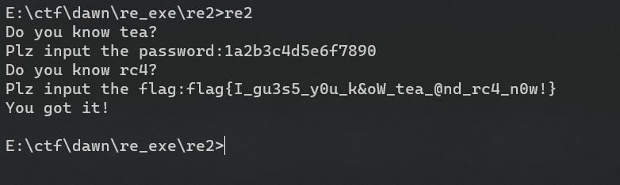
（但是，题目中好像并没有要求理解rc4的内容….）
RE3
写在前面：RE3这道题让我开拓了眼界，Win32竟然有一套类似于try-catch的机制….而且滥用中断机制可以做好多事情….
首先拖入IDA
上来就是一个最大公约数…
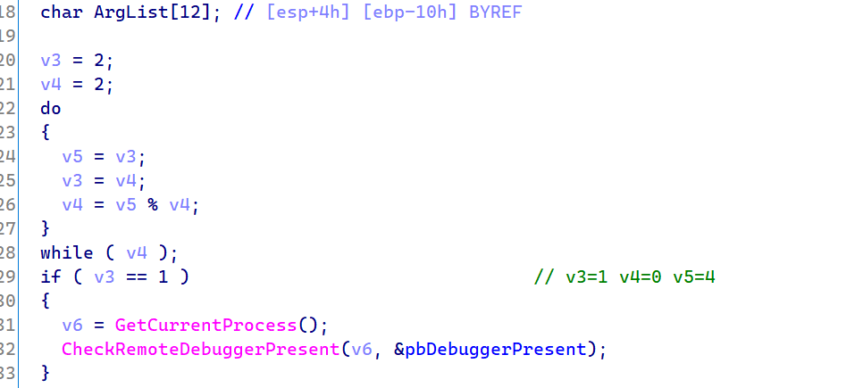
（这里v3，v4的值做了修改）
这个求公约数的东西在原来的程序里保证下面的if条件恒为真，经过分析后续工作流程发现我们并不希望这里的代码被执行，所以直接用keypatch将v3和v4改了，使这个if无法进入(其实也可以大段nop)
然后下面添加了两个异常处理函数：
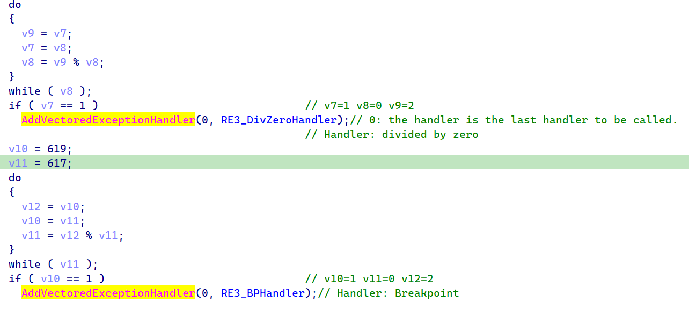
加上下面那句话：
OMG a widow is somewhere! find it out!
可以判断这两个异常处理函数里面可能有真正的逻辑
先看第一个处理函数RE3_DivZeroHandler（我这里重命名了）
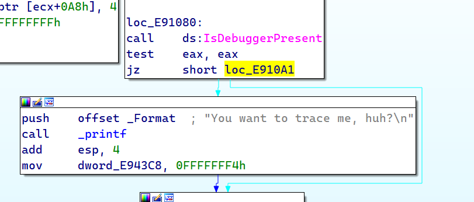
里面有一句十分挑衅的反调试提示，直接将jz改成jmp绕过
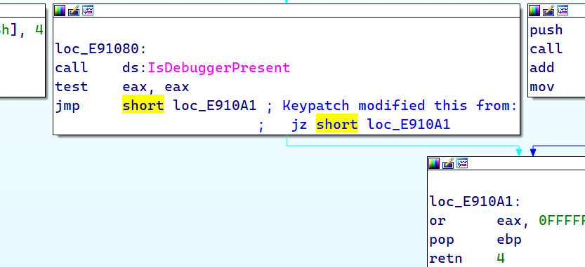
然后看一下汇编（其实这个F5的结果不便于分析）
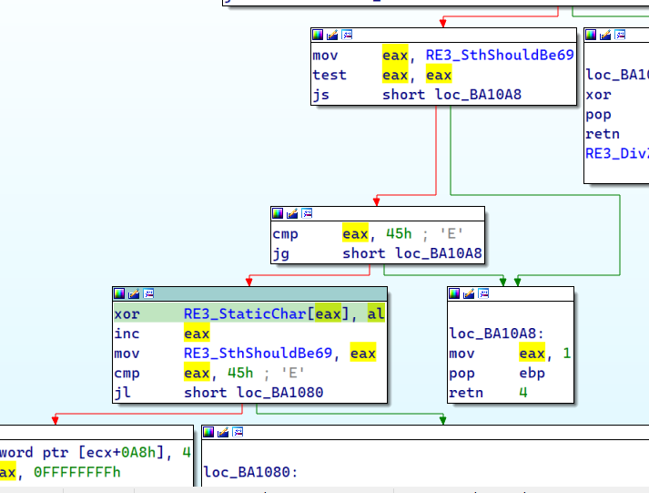
大致的逻辑就是将RE3_StaticChar中的数据按顺序分别从0到45H异或一遍，这里采用动态调试的手段可以提取出异或完成的数据：
1 | uint8_t RE3_StaticChar[] = { |
而这个函数是如何进入的呢？
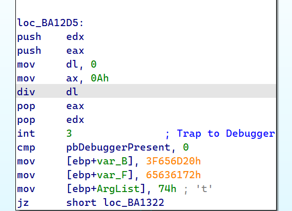
在这里我们发现了一个故意的除以0的操作，这里发生了异常，然后被捕捉到了…
在上面的处理函数里，通过触发45H次异常完成了for循环操作，然后最后一次
通过修改edx使得这里不会再发生除以零的异常。
在完成所有的除以0的异常后，跟来了一个int 3断点中断，这里会跳转到RE3_BPHandler处
在解决这个函数时，要结合汇编代码和F5逆向出的C代码，逆向的效果感觉不太好，省略了许多信息
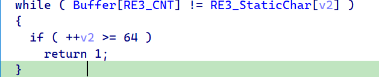
程序先在一个常量字符串中找当前输入的字符的下标，其中RE3_StaticChar在RE3_DivZeroHandler中已经处理过了：
a_pXxmUujRrgOonLlkIihFfeCcb9ZY6WV3TS0QPzNMwKJtHGqEDdBA/87y54v21s
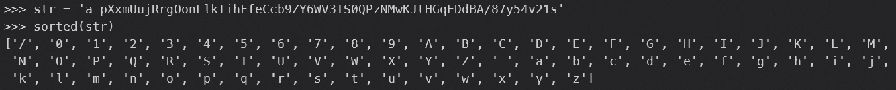
扫描一遍发现这个字母表包含了大小写字母、数字、/和_，这里限定了输入的范围
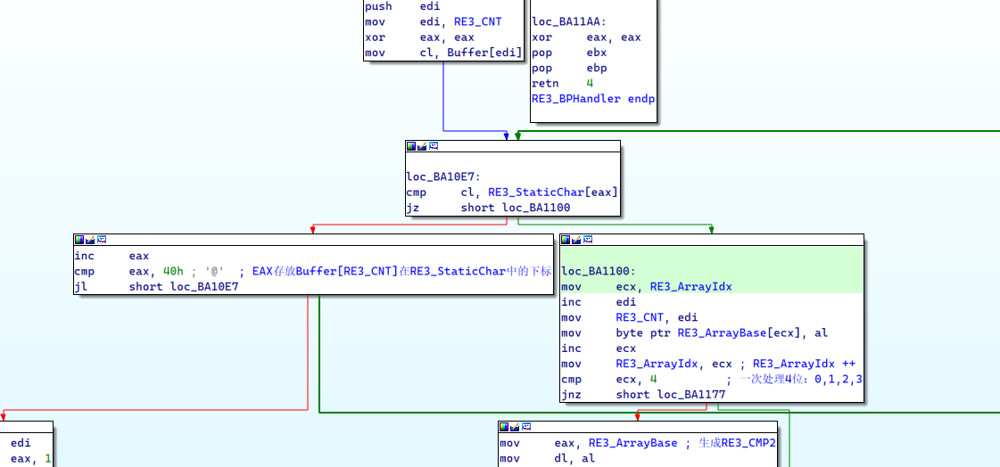
在找到当前字符对应的下标后，跳转到loc_BA1100继续
这里分析比较烦的是：要记住这个中断会被多次触发，形成了一个大的循环，在这里RE3_CNT和RE3_ArrayIdx都是通过在一次函数调用时更新一次
这个loc_BA1100的意思就是把找到的下标(uint8_t)四个一组放到RE3_ArrayBase中(uint32_t)
在完成4次取数后进入RE3_CMP2的生成逻辑中
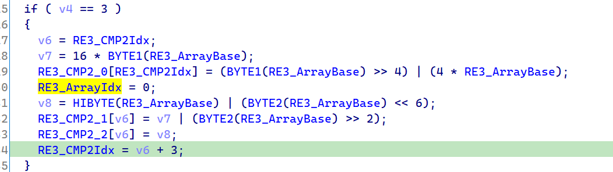
这里重写一遍，逻辑如下：
1 | // transform 为一个map, 保存了下标的映射关系 |
这里我们可以继续分析：前面找下标时已经发现下标<64，且为8位数，所以可以表示为00xx xxxx的形式
1 | CMP2[k / 4 * 3] |
在限制条件下我们可以根据CMP2的数据推出输入：
1 | input[k] = RE3_CMP1[k / 4 * 3] >> 2; // p |
在处理函数的尾部，一样的套路，如果完成了循环，那么就修改EIP执行下一条代码，反之继续触发中断
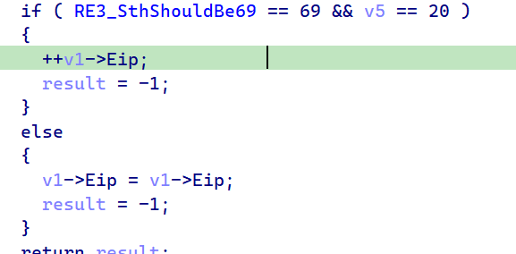
最后回到主函数，发现程序比对了CMP1和CMP2
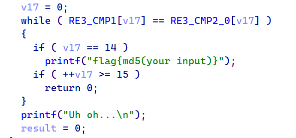
通过动态调试可以拿到RE3_CMP1的数据：
1 | uint8_t RE3_CMP1[] = { |
最后，直接根据上述思路写解密代码：
1 |
|
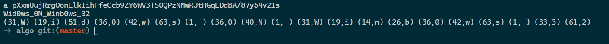
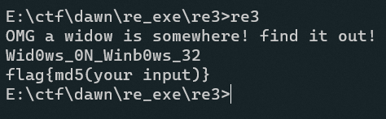